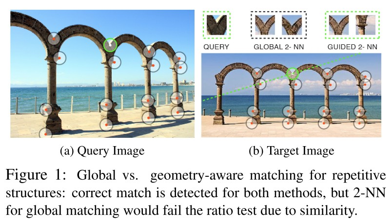

1. Global Structure from Motion Pipeline¶
使用全局方法来估计场景的相机位置和 3D 结构以估计相机位姿。 首先，全局估计旋转，然后使用全局优化估计位置。

步骤如下：
从2视图匹配和 TwoViewInfo 创建初始视图图，描述匹配图像之间的相对位姿。
过滤初始视图图并删除2视图匹配异常值。
校准所有相机的内参。
估计每个相机的全局方向。
过滤视图图：删除相对旋转与估计的全局旋转不一致的任何 TwoViewInfos 。
在已知旋转的情况下优化相对平移，并过滤潜在的不良相对平移。
根据相对平移过滤任何错误的 TwoViewInfo 。
从估计的旋转和 TwoViewInfo 估计所有摄像机的全局位置。
估计3D点。
BA优化。
在每个过滤步骤之后，删除不再连接到视图图中最大连接组件的任何视图。
-
class
GlobalReconstructionEstimator¶
class GlobalReconstructionEstimator : public ReconstructionEstimator {
public:
GlobalReconstructionEstimator(
const ReconstructionEstimatorOptions& options);
ReconstructionEstimatorSummary Estimate(ViewGraph* view_graph,
Reconstruction* reconstruction);
private:
bool FilterInitialViewGraph();
void CalibrateCameras();
bool EstimateGlobalRotations();
void FilterRotations();
void OptimizePairwiseTranslations();
void FilterRelativeTranslation();
bool EstimatePosition();
void EstimateStructure();
bool BundleAdjustment();
// Bundle adjust only the camera positions and points. The camera orientations
// and intrinsics are held constant.
bool BundleAdjustCameraPositionsAndPoints();
ViewGraph* view_graph_;
Reconstruction* reconstruction_;
ReconstructionEstimatorOptions options_;
FilterViewPairsFromRelativeTranslationOptions translation_filter_options_;
BundleAdjustmentOptions bundle_adjustment_options_;
RansacParameters ransac_params_;
std::unordered_map<ViewId, Eigen::Vector3d> orientations_;
std::unordered_map<ViewId, Eigen::Vector3d> positions_;
DISALLOW_COPY_AND_ASSIGN(GlobalReconstructionEstimator);
};